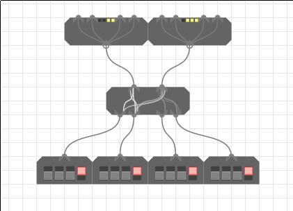
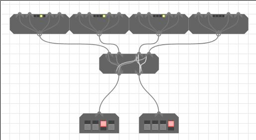
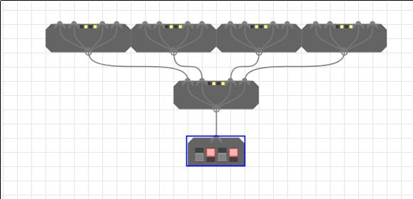
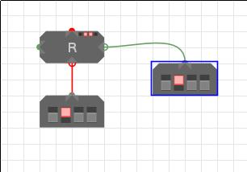
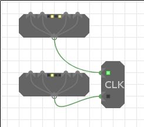
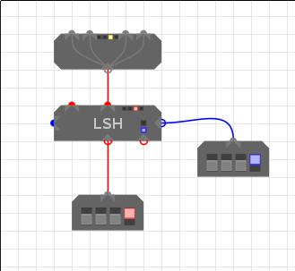
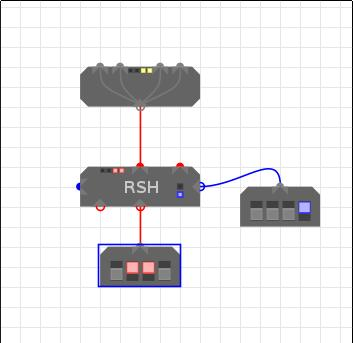
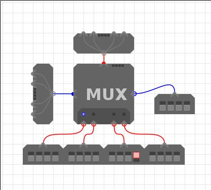
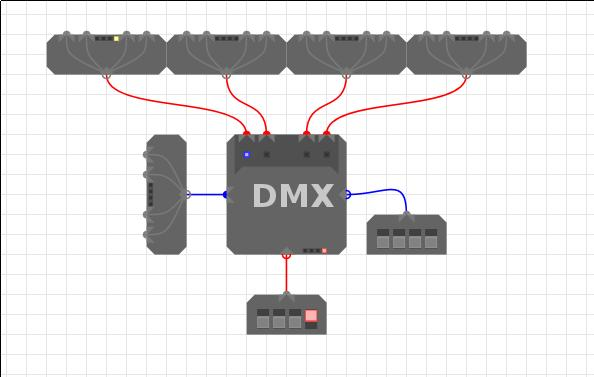
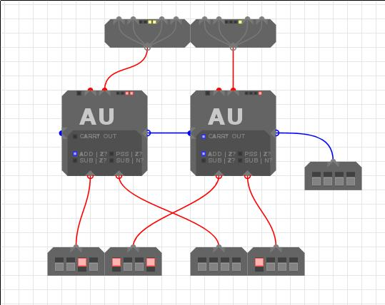

xs indicate that the binary digit doesn't matter, it can be 1 or 0.- Examples of components
Split Merge
| xxDC | ABCD | ||
|---|---|---|---|
| xxxD | xxDC | xxxB | xxBA |
| xxBA | xxxB | xxDC | xxxD |
|---|---|---|---|
| ABCD | xxDC |
Merge (4 inputs)

This example seems to demonstrate an error in the merge code. Decompiling yields some rather strange code that updates the outputs. Perhaps this is undefined behaviour!? This is the problem of not having any official documentation.
This is quite simple. Each of the 4 inputs represents a bit of a 4 bit word. A is the LSB and D the MSB. The 4 bit word is constructed in output A.
Output B will only produce a word of the form xxDC or xxC2C1 where D is the LSB of
input D; the same goes for input C.
Split (4 outputs)

Port A splits out each bit to the LSB of the output in order (A from port A -> LSB of output A), however it is not quite this simple as on output A and C the 2nd and 4th bits from port A are also present in the 2nd LSB. so 00BA into Port A yields 00BA on output A. This is a bit irritating meaning you'll have to use a bit mask to get at A, or perform a bit of shifting. Refer to the top table if this explanation is crap.
4 Way Fanout

Takes an input and repeats it to four outputs
REG - Register

These store their inputs when enabled, and constantly output whatever is stored in them. The control input takes the following form:
| Bit | Function | Values and outputs |
|---|---|---|
| 0 | Clock | 0 - no change, 1 - read input if enable=1 |
| 1 | Reset | Reset the register to 0 |
| 2 | Enable | 0 - no change, 1 - read input if clock=1 |
CLK - Clock

Outputs 010x to two outputs where one will be 0101 and the other 0100.
This is used to alternately enable registers.
LSH - Left Shift

NOTE: Only the 2 LSBs of control input are handled
Take and input and shift it left by the number of places in the control input. No idea what the chain in and outs do. If you do know, please email me and I'll add it in.
RSH - Right Shift

NOTE: Only the 2 LSBs of control input are handled
Take the input and shift it right by the number of places in the control input. No idea what the chain in and outs do.
MUX - Multiplexer

The multiplexer takes 4 inputs and selects one of them based on the 2 LSBs of the Control in, which is also fed out to Control out.
| Control input | Input selected |
|---|---|
| xx00 | A |
| xx01 | B |
| xx10 | C |
| xx11 | D |
DMX - Demultiplexer

The demultiplexer takes an input and then based on the Control input selects which output to route it to.
| Control input | Output selected |
|---|---|
| xx00 | A |
| xx01 | B |
| xx10 | C |
| xx11 | D |
AU - Arithmetic Unit

Performs arithmetic operations on two inputs.
| Control Inputs (right input) | Function selected | Comparison selected |
|---|---|---|
| x000 | Addition | Output = 0 |
| x001 | Pass through A | Output = 0 |
| x110 | A - B | A = B |
| x111 | A - B | A < B |
Subtraction is carried out by performing (A + ¬B) + 1 since -B = ¬B + 1 in
the two's complement system.
The left output is the Control out that instructs another chained AU that overflow has occured so you can chain AUs to handle more than 4 bit numbers.
LU - Logic Unit

Performs logical operations on two inputs.